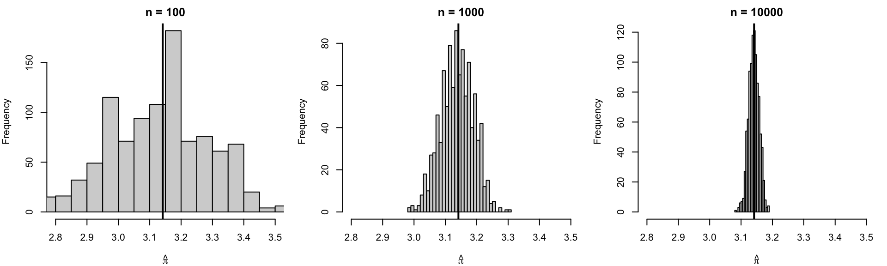
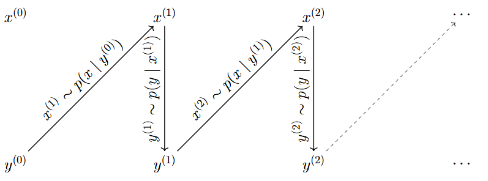
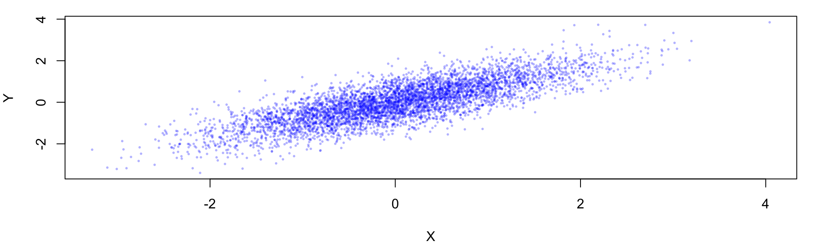
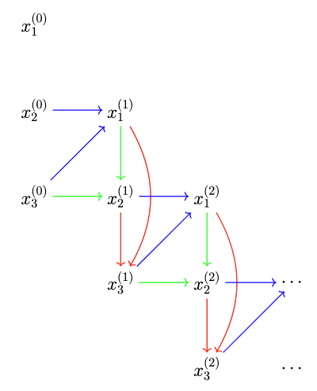
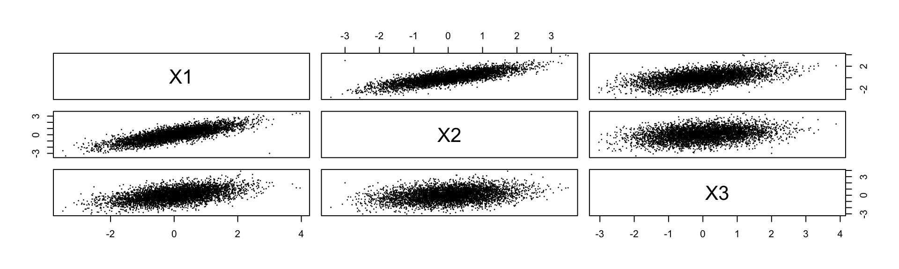
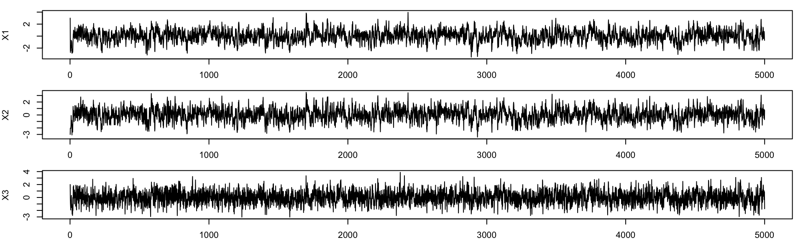

y: x^3/3STAT2005 Computer Simulation
Lecture 9 — Monte Carlo Integration & Markov Chain Monte Carlo
Sam Wiwatanapataphee (275287a@curtin.edu.au)
14 May 2026
Goals today
- Part 1: Monte Carlo Integration
- Integration as Expectation
- Monte Carlo Estimator
- Monte Carlo Error and Convergence
- Pros and Cons of Monte Carlo Integration
- Transition to Markov Chain Monte Carlo
- Part 2: Markov Chain Monte Carlo (MCMC)
- Introduction to MCMC
- Gibbs Sampling
- Bivariate Normal Distribution
- Multivariate Normal Distribution
- Bayesian Normal Model
- Part 3: Bayesian Gibbs Sampling
- Case Study - 💡 Estimating Household Energy Savings
Part 1: Monte Carlo Integration
Motivation for Monte Carlo Integration
In many scientific and statistical problems, we are interested in quantities that can be written as integrals.
Examples include:
- probabilities;
- expected values;
- variances;
- areas and volumes;
- posterior means in Bayesian statistics.
For simple models, calculus may provide exact solutions.
However, in realistic applications:
- analytical solutions may not exist;
- integrals may be high-dimensional;
- models may be computationally complex.
Key Idea: Monte Carlo integration uses averages computed from random samples to approximate complicated integrals.
This transforms integration from a calculus problem into a simulation problem.
Integration as Expectation
Recall from probability theory that the expectation of a function of a random variable can be expressed as an integral,
\[ \mathbb{E}[X] = \int x f(x)\,dx, \]
where \(f(x)\) is the probability density function of the random variable \(X\).
Suppose \(X\) is a continuous random variable with probability density function \(f(x)\), and let \(h(x)\) be a function of interest. Then, the expectation of \(h(X)\) is
\[ \mathbb{E}[h(X)] = \int h(x)f(x)\,dx. \]
Many difficult integrals can be rewritten as expectations of random variables. And once we have this connection, we can use random sampling to estimate these expectations, which is the basis of Monte Carlo integration.
Monte Carlo integration is a method for estimating the value of an integral using random sampling. The basic idea is to sample points from a probability distribution and use these samples to approximate the integral.
Example 1: Estimating an Expected Value
Compute the following integral using Monte Carlo integration:
\[ I = \int_0^1 x^2\,dx. \]
Since this example is quite simple, we can compute the integral analytically for comparison:
\[ I = \int_0^1 x^2\,dx = \left[ \frac{x^3}{3} \right]_0^1 = \frac{1}{3}. \]
To apply Monte Carlo integration, we can interpret the integral as an expectation. We can rewrite the integral as:
\[ I = \int_0^1 x^2(1)\,dx = \mathbb{E}[X^2], \]
where \(f(x)=1\), and \(X \sim \text{Uniform}(0,1)\) corresponds to the limit of integration.
Example 1: Estimating an Expected Value (Cont.)
To estimate \(I\), we can
- generate \(N\) random samples from the \(\text{Uniform}(0,1)\) distribution,
- compute \(X_i^2\) for each sample, and
- take the average.
Monte Carlo estimate: 0.3327025 Analytical value: 0.3333333
The Monte Carlo estimate will be close to the analytical value of \(1/3\), and the accuracy improves as we increase the number of samples \(N\).
Monte Carlo Estimator
Suppose \(X_1,X_2,\dots,X_n\) are independent and identically distributed (i.i.d.) samples from density \(f(x)\).
The Monte Carlo estimator of an integral
\[ I = \int h(x) f(x)\,dx = \mathbb{E}[h(X)]. \tag{1}\]
is
\[ \hat I_n = \frac{1}{n}\sum_{i=1}^n h(X_i). \tag{2}\]
This estimator is simply the sample mean of the simulated values.
Why This Works
Monte Carlo integration is justified by the Law of Large Numbers (LLN).
Recall from Week 1 that if \(X_1,X_2,\dots,X_n\) are i.i.d. with finite mean \(\mu\), then
\[ \bar x \to \mu \quad \text{as } n\to\infty. \]
Since the Monte Carlo estimator \(\hat I_n\) is simply a sample average, it converges to the true expectation \(\mathbb{E}[h(X)]\) as the number of samples increases. Thus,
\[ \hat I_n \to I \quad \text{as } n\to\infty. \]
Example 2: Estimating an Area \(\pi\) of a Unit Circle
Consider the square \([-1,1]\times[-1,1]\) with area 41.
Inside the square is a circle of radius 1 centred at the origin. The equation of the circle is
\[ x^2 + y^2 = 1. \tag{3}\]
Since the radius of the circle is 1, the area of the circle is
\[ \pi r^2 = \pi (1)^2 = \pi. \]
How can we use Monte Carlo integration to estimate the area of the unit circle \(\pi\)?
Method 1: Using Curve-Height
The first method is to express the area as a single integral and then apply the Monte Carlo estimator.
Step 1: Expressing Area as an Integral
From Equation 3, rewriting it in terms of \(y\) gives
\[ y = \pm\sqrt{1-x^2}. \]
Then, from the geometric interpretation of the definite integral, the area of the circle can be written as
\[ \begin{aligned} A &= \int_{-1}^1 \left( \sqrt{1-x^2} - (-\sqrt{1-x^2}) \right) dx \\ A &= \int_{-1}^1 2\sqrt{1-x^2}\,dx. \end{aligned} \]
Step 2: Rewriting as an Expectation
Since \(X \sim \text{Uniform}(-1,1)\), its density is
\[ f(x) = \frac12, \quad -1 < x < 1. \]
Rewriting the area integral as in Equation 1, we can express the area as an expectation
\[ A = \int_{-1}^1 4\sqrt{1-x^2} \left(\frac12\right)\,dx = \mathbb{E}[4\sqrt{1-X^2}]. \tag{4}\]
Step 3: Apply Monte Carlo Estimator
From Equation 2, the Monte Carlo estimator of the area is given by
\[ \hat A_n = \frac1n\sum_{i=1}^n 4\sqrt{1-X_i^2}, \]
Since \(A = \pi\), the Monte Carlo estimate of \(\pi\) is
\[ \boxed{ \hat \pi_n = \frac1n\sum_{i=1}^n 4\sqrt{1-X_i^2},} \]
where \(X \sim \text{Uniform}(-1,1)\).
Analytical value: 3.14159
Monte Carlo estimate: 3.14051Python Version
import numpy as np
from scipy.integrate import quad
np.random.seed(1234)
n = 5000
x = np.random.uniform(-1, 1, n)
pi_hat = np.mean(4 * np.sqrt(1 - x**2))
pi, _ = quad(lambda x: 2 * np.sqrt(1 - x**2), -1, 1)
print("Analytical value: ", round(pi, 5),
"\nMonte Carlo estimate: ", round(pi_hat, 5), sep="")Method 2: Using Dartboard
The second method is to express the area as a double integral and then apply the Monte Carlo estimator. This method is more intuitive and closely related to the original idea of Monte Carlo methods, which is to use random sampling to approximate areas and volumes.
Step 1: Expressing Area as an Integral
The area of the circle can be written as a double integral,
\[ A = \iint_{[-1, 1]^2} \mathbf{1}(x^2 + y^2 \le 1) \, dx\,dy, \]
where
\[ \mathbf{1}(x^2 + y^2 \le 1) = \begin{cases} 1 & \text{if } x^2 + y^2 \le 1, \\ 0 & \text{otherwise}. \end{cases} \]
This indicator function simply checks whether a point belongs to the circle. The integral therefore “adds up” all points inside the circle, producing the total area.
Step 2: Rewriting as an Expectation
Since \((X,Y)\) is uniformly distributed over the square \([a, b] \times [c, d] = [-1,1]\times[-1,1]\), its joint density is
\[ \begin{aligned} f(x,y) &= f_X(x)f_Y(y) \\ &= \frac{1}{b-a} \cdot \frac{1}{d-c} \\ f(x,y) &= \frac{1}{4}, \quad -1 < x < 1,\; -1 < y < 1. \end{aligned} \]
Since
\[ f(x,y) = \frac{1}{4}, \quad -1 < x < 1,\; -1 < y < 1, \]
rewriting the area integral as in Equation 1, we can express the area as an expectation of the indicator function
\[ A = \iint_{[-1, 1]^2} 4\cdot\mathbf{1}(x^2 + y^2 \le 1) \left(\frac{1}{4}\right) dx\,dy = 4\cdot\mathbb{E}[\mathbf{1}(X^2 + Y^2 \le 1)]. \]
Step 3: Apply Monte Carlo Estimator
From Equation 2, the Monte Carlo estimator of the area is given by
\[ \hat A_n = 4\cdot\frac1n\sum_{i=1}^n \mathbf{1}(X_i^2 + Y_i^2 \le 1), \]
Since \(A = \pi\), the Monte Carlo estimate of \(\pi\) is
\[ \boxed{ \hat \pi_n = 4\cdot \frac1n\sum_{i=1}^n \mathbf{1}(X_i^2 + Y_i^2 \le 1),} \]
where \((X,Y) \sim \text{Uniform}([-1,1]\times[-1,1])\).
Step 4: From expectation to probability
If a point \((X,Y)\) is generated uniformly inside the square, then the probability that a point falls inside the circle is
\[ P(x^2 + y^2 \le 1) = \frac{\text{Area of the circle}}{\text{Area of the square}} = \frac{\pi}{4}. \tag{5}\]
Rearranging gives
\[ \pi = 4 \times P(x^2 + y^2 \le 1). \]
Suppose we generate \(n\) random points uniformly inside the square (from \((X,Y) \sim \text{Uniform}([-1,1]\times[-1,1])\)) and let
\[ k = \text{number of points that satisfy } x^2 + y^2 \le 1. \]
Then, the proportion of points that fall inside the circle is
\[ \frac{k}{n} \approx P(x^2 + y^2 \le 1). \]
Therefore, the Monte Carlo estimate of \(\pi\) can be simplified to
\[ \boxed{ \hat \pi \approx 4\times \frac{k}{n}} \]
As the number of simulated points increases, the estimate becomes more accurate by the Law of Large Numbers.

[1] 3.144Python Version
import numpy as np
import matplotlib.pyplot as plt
np.random.seed(1234)
x = np.random.uniform(-1, 1, 1000)
y = np.random.uniform(-1, 1, 1000)
fig, ax = plt.subplots()
ax.set_aspect('equal')
ax.set_xlabel(""); ax.set_ylabel("")
ax.scatter(x, y, s=10, alpha=0.5)
circle = plt.Circle((0, 0), 1, fill=False, color='red', linewidth=3)
ax.add_patch(circle)
plt.show()
n = 1000
x = np.random.uniform(-1, 1, n)
y = np.random.uniform(-1, 1, n)
inside = (x**2 + y**2 <= 1)
pi_hat = 4 * np.mean(inside)
pi_hatCurve-Height vs Dartboard Method
- The curve-height method is better for showing Monte Carlo integration.
- The dartboard method is better for showing simulation-based probability/area estimation.
- They are both valid methods for estimating the area of the circle, and they will give similar estimates as the number of samples increases.
Question: Which estimator is better in practice?
Hint: Check the variance of the two estimators.
Recall the two estimators:
| Method | Random Variable | Monte Carlo Estimator \(\hat \pi_n\) |
|---|---|---|
| Curve-Height | \(X \sim U(-1,1)\) | \(\hat \pi_1 = \frac1n\sum_{i=1}^n 4\sqrt{1-X_i^2}\) |
| Dartboard | \((X,Y) \sim U([-1,1]^2)\) | \(\hat \pi_2 = \frac4n\sum_{i=1}^n \mathbf{1}(X_i^2 + Y_i^2 \le 1)\) |
Both estimators are unbiased:
\[ \mathbb E[\hat\pi_1] = \mathbb E[\hat\pi_2] = \pi. \]
How to compute the variance of these estimators?
Estimator 1: Curve-Height
| Method | Random Variable | Monte Carlo Estimator \(\hat \pi_n\) |
|---|---|---|
| Curve-Height | \(X \sim U(-1,1)\) | \(\hat \pi_1 = \frac1n\sum_{i=1}^n 4\sqrt{1-X_i^2}\) |
Variance of the curve-height estimator is \[ \begin{aligned} \text{Var}(\hat\pi_1) &= \frac1n \text{Var}(4\sqrt{1-X^2}) \\ &= \frac1n \left(\mathbb{E}[16(1-X^2)] - \mathbb{E}[4\sqrt{1-X^2}]^2\right). \end{aligned} \]
\(\mathbb{E}[X^2] = \frac{1}{3}\) and according to Equation 4, \(\mathbb{E}[4\sqrt{1-X^2}] = \pi\), so
\[ \begin{aligned} \text{Var}(\hat\pi_1) &= \frac1n \left(\mathbb{E}[16(1-X^2)] - \pi^2\right) \\ &= \frac1n \left[16(1-\mathbb{E}[X^2])-\pi^2\right] \\ &= \frac1n \left[16\left(1-\frac{1}{3}\right)-\pi^2\right] \\ &= \frac1n \left(\frac{32}{3}-\pi^2\right) \\ \therefore \text{Var}(\hat\pi_1) &\approx \frac{0.797}{n}. \end{aligned} \]
Estimator 2: Dartboard
| Method | Random Variable | Monte Carlo Estimator \(\hat \pi_n\) |
|---|---|---|
| Dartboard | \((X,Y) \sim U([-1,1]^2)\) | \(\hat \pi_2 = \frac4n\sum_{i=1}^n \mathbf{1}(X_i^2 + Y_i^2 \le 1)\) |
Variance of the dartboard estimator is
\[ \begin{aligned} \text{Var}(\hat\pi_2) &= \frac{16}{n} \text{Var}(\mathbf{1}(X^2 + Y^2 \le 1)) \\ &= \frac{16}{n} \left(\mathbb{E}[\mathbf{1}(X^2 + Y^2 \le 1)] - \mathbb{E}[\mathbf{1}(X^2 + Y^2 \le 1)]^2\right). \end{aligned} \]
According to Equation 5, \(\mathbb{E}[\mathbf{1}(X^2 + Y^2 \le 1)] = P(x^2 + y^2 \le 1) = \pi/4\), so
\[ \begin{aligned} \text{Var}(\hat\pi_2) &= \frac{16}{n} \left(\frac{\pi}{4} - \left(\frac{\pi}{4}\right)^2\right) \\ &= \frac1n (4\pi-\pi^2) \\ &= \frac1n (4\pi-\pi^2) \\ \text{Var}(\hat\pi_2) &\approx \frac{2.697}{n}. \end{aligned} \]
Comparison of Estimators
| Method | Random Variable | Monte Carlo Estimator \(\hat \pi_n\) | Variance \(\text{Var}(\hat \pi_n)\) |
|---|---|---|---|
| Curve-Height | \(X \sim U(-1,1)\) | \(\hat \pi_1 = \frac1n\sum_{i=1}^n 4\sqrt{1-X_i^2}\) | \(\text{Var}(\hat \pi_1)\approx \dfrac{0.797}{n}\) |
| Dartboard | \((X,Y) \sim U([-1,1]^2)\) | \(\hat \pi_2 = \frac4n\sum_{i=1}^n \mathbf{1}(X_i^2 + Y_i^2 \le 1)\) | \(\text{Var}(\hat \pi_2)\approx \dfrac{2.697}{n}\) |
\(\therefore\) Since \(\text{Var}(\hat\pi_1)<\text{Var}(\hat\pi_2),\) the curve-height estimator is more efficient.
In fact, the dartboard estimator requires approximately
\[ \frac{\text{Var}(\hat \pi_2)}{\text{Var}(\hat \pi_1)} \approx \frac{2.697}{0.797} \approx 3.4 \]
times as many simulations to achieve the same variance.
Key takeaway: Monte Carlo estimators are random, and different estimators can produce very different levels of variability even when estimating the same quantity.
Question: How does Monte Carlo estimation error behave?
Monte Carlo Error and Convergence
Monte Carlo estimates are random because they depend on random samples. If we repeat the simulation, we obtain slightly different answers each time. The accuracy of the estimator is described by the Central Limit Theorem (CLT).
Central Limit Theorem for Monte Carlo Estimators
If the Monte Carlo estimator is defined as
\[ \hat I_n = \frac1n\sum_{i=1}^n h(X_i), \]
then CLT implies that for large \(n\),
\[ \sqrt n(\hat I_n-I) \to N(0,\sigma^2), \tag{6}\]
where the Monte Carlo error is \(\hat I_n - I\) and the variance is \(\sigma^2 = \text{Var}(h(X))\).
Dividing Equation 6 both sides by \(\sqrt n\) gives
\[ \boxed{ \hat I_n - I \approx N\left(0, \frac{\sigma^2}{n}\right) } \]
Does this look familiar?
Monte Carlo Error and Convergence (Cont.)
The Monte Carlo error \(\hat I_n - I\) is approximately normally distributed with mean zero and variance \(\sigma^2/n\):
\[ \boxed{ \hat I_n - I \approx N\left(0, \frac{\sigma^2}{n}\right) } \]
Since the typical size of random fluctuations is measured by the standard deviation
\[ \boxed{\text{Magnitude of Monte Carlo error} \propto \frac{1}{\sqrt{n}} } \]
So,
- 100 simulations gives error roughly proportional to 1/10,
- 10,000 simulations gives error roughly proportional to 1/100.
What do we notice about the rate of convergence?
It requires 100 times as many simulations to reduce the error by a factor of 10.
That’s a very slow rate of convergence!
Example: Estimate \(\pi\) using Monte Carlo integration with different numbers of simulated points, \(n = 100, 1000, 10000\)
set.seed(1234)
estimate_pi <- function(n) {
x <- runif(n, -1, 1); y <- runif(n, -1, 1)
inside <- x^2 + y^2 <= 1
pi_hat <- 4 * mean(inside)
return(pi_hat)
}
B <- 1000
n_values <- c(100, 1000, 10000)
# Repeat the Monte Carlo experiment for each n
results <- lapply(n_values, function(n) {
replicate(B, estimate_pi(n))
})
names(results) <- paste0("n = ", n_values)
# Summary statistics
sapply(results, function(x) {
c(mean = mean(x), sd = sd(x), bias = mean(x) - pi)
}) n = 100 n = 1000 n = 10000
mean 3.136320000 3.138332000 3.1409696000
sd 0.160557268 0.051433911 0.0166427178
bias -0.005272654 -0.003260654 -0.0006230536Python Version
import numpy as np
def estimate_pi(n):
x = np.random.uniform(-1, 1, n)
y = np.random.uniform(-1, 1, n)
inside = x**2 + y**2 <= 1
pi_hat = 4 * np.mean(inside)
return pi_hat
B = 1000
n_values = [100, 1000, 10000]
results = {f"n = {n}": [estimate_pi(n) for _ in range(B)] for n in n_values}
for n, estimates in results.items():
mean_estimate = np.mean(estimates)
sd_estimate = np.std(estimates)
bias_estimate = mean_estimate - np.pi
print(f"{n}: mean={mean_estimate:.4f}, sd={sd_estimate:.4f}, bias={bias_estimate:.4f}")
Python Version
import matplotlib.pyplot as plt
fig, axes = plt.subplots(1, 3, figsize=(15, 5))
for i, n in enumerate(n_values):
axes[i].hist(results[f"n = {n}"], bins=30, range=(2.8, 3.5))
axes[i].axvline(np.pi, color='red', linewidth=2)
axes[i].set_title(f"n = {n}")
axes[i].set_xlabel(r'$\hat{\pi}$')
plt.tight_layout()
plt.show()Question: How to Reduce Monte Carlo Error by Half?
Pros and Cons of Monte Carlo Integration
| Pros | Cons |
|---|---|
| Conceptually simple and easy to implement. | Slow convergence rate (\(1/\sqrt{n}\)). |
| Can handle high-dimensional integrals. | Variance can be large, leading to noisy estimates. |
| Flexible and can be applied to a wide range of problems. | Requires a large number of samples for accurate estimates. |
| Can be used when analytical solutions are intractable. | Not suitable for all types of integrals (e.g., those with singularities or direct sampling is impossible). |
In many realistic problems, direct sampling is impossible.
- Bayesian posterior distributions may have unknown normalising constants
- High-dimensional models may be analytically intractable
- Complicated joint distributions may not have standard sampling algorithms
What can we do if we cannot sample directly from the target distribution?
Markov chain Monte Carlo (MCMC)
Part 2: Markov Chain Monte Carlo (MCMC)
Introduction to MCMC
Markov Chain Monte Carlo (MCMC) is a powerful class of algorithms for sampling from complex probability distributions, especially when direct sampling is difficult or impossible. MCMC methods construct a Markov chain that has the desired distribution as its equilibrium distribution, allowing us to generate samples that can be used for estimation and inference.
What is a Markov Chain?
Recall from Stochastic Modelling lectures:
A Markov chain (or Markov process) is a sequence of random variables
\[ (X_0, X_1, X_2, \dots) \]
such that the distribution of the next state \(X_{n+1}\) depends only on the current state \(X_n\) and not on the previous states. That is,
\[ P(X_{n+1} | X_n, X_{n-1}, \dots, X_0) = P(X_{n+1} | X_n). \]
This property is called the Markov property.
- Equilibrium (stationary) distribution:
A probability distribution \(\pi\) is called a stationary distribution of a Markov chain if, whenever \(X_0 \sim \pi,\) the distribution of \(X_n\) remains \(\pi\) for all \(n \ge 0\).
Introduction to MCMC (Cont.)
What is considered a “complex” distribution?
A distribution may be considered complex if it:- has a high-dimensional parameter space (e.g., multivariate or joint distributions);
- is defined only implicitly (e.g., posterior distributions in Bayesian inference);
- has an intractable normalising constant;
- or is difficult to sample from directly using standard simulation methods.
MCMC Algorithms
- Metropolis-Hastings algorithm: a general MCMC algorithm that constructs a Markov chain using a proposal distribution and an acceptance criterion to ensure convergence to the target distribution.
- Gibbs sampling (a special case of Metropolis-Hastings): an MCMC algorithm that generates samples from a multivariate distribution by iteratively sampling from the conditional distributions of each variable given the others.
- Hamiltonian Monte Carlo (HMC): an MCMC algorithm that uses Hamiltonian dynamics to propose new states, allowing for more efficient exploration of the target distribution.
- No-U-Turn Sampler (NUTS): an extension of HMC that automatically tunes the path length to avoid unnecessary computations and improve sampling efficiency.
MCMC is still a developing field, and new algorithms are being proposed to address specific challenges in sampling from complex distributions.
Gibbs Sampling
In practice, direct sampling (as in Multivariate Simulation lecture) from the full joint distribution may be extremely difficult or even impossible.
Gibbs sampling is a specific MCMC algorithm that generates samples from a multivariate distribution by iteratively sampling from the conditional distributions of each variable given the others.
Bivariate Example
Suppose we wish to sample from the joint distribution
\[ p(x,y), \]
which may be difficult to sample from directly.
However, we know the conditional distributions
\[ p(x|y) \quad \text{and} \quad p(y|x), \]
which are easier to sample from.
Gibbs sampling idea
If we can sample from the conditional distributions, we can use these to construct a Markov chain that converges to the joint distribution.
Bivariate Example (Cont.)
Suppose we want to sample from a joint distribution \(p(x,y).\)
Starting from the initial values \(x^{(0)}\) and \(y^{(0)}\), the iterative updates are:
\[ x^{(t+1)} \sim p(x|y^{(t)}), \]
\[ y^{(t+1)} \sim p(y|x^{(t+1)}). \]
- These updates are repeated many times, and the sequence of samples forms a Markov chain.
- After sufficiently many iterations, the chain behaves as though it were sampling from the target joint distribution.

- sample a new value of \(x\) conditional on the current value of \(y\);
- sample a new value of \(y\) conditional on the updated value of \(x\).
Gibbs Sampling Algorithm
Suppose the target distribution is multivariate with \(d\) variables:
\[ p(x_1,x_2,\dots,x_d). \]
Step 1 — Choose initial values
Select starting values:
\[ x_1^{(0)},x_2^{(0)},\dots,x_d^{(0)}. \]
Step 2 — Sequential conditional updates
For iteration \(t=0,1,2,\dots\),
Update each variable one at a time:
\[ x_1^{(t+1)} \sim p(x_1|x_2^{(t)},x_3^{(t)},\dots,x_d^{(t)}), \]
\[ x_2^{(t+1)} \sim p(x_2|x_1^{(t+1)},x_3^{(t)},\dots,x_d^{(t)}), \]
and so on until
\[ x_d^{(t+1)} \sim p(x_d|x_1^{(t+1)},\dots,x_{d-1}^{(t+1)}). \]
The Gibbs sampler updates one variable at a time, conditional on the current values of all the other \(d−1\) variables.
Step 3 — Repeat
Repeat for many iterations.
The generated sequence approximates samples from the target distribution.
Example 1: Bivariate Normal
Consider the bivariate normal distribution:
\[ \begin{pmatrix} X \\ Y \end{pmatrix} \sim N\left( \begin{pmatrix} 0 \\ 0 \end{pmatrix}, \begin{pmatrix} 1 & \rho \\ \rho & 1 \end{pmatrix} \right). \]
Suppose \(\rho = 0.8\). Use Gibbs sampling to generate samples from this distribution.
Step 0 — Identify conditional distributions
Recall from Multivariate Distribution, the joint density can be written as
\[ f(x,y)= \frac{1}{2\pi\sqrt{1-\rho^2}} \exp\left( -\frac{1}{2(1-\rho^2)} (x^2 - 2\rho xy + y^2) \right). \]
To obtain the conditional distribution of \(X\mid Y= y\), we can treat \(y\) as a constant and view the joint density as a function of \(x\) alone. This gives
\[ f(x|y) \propto \exp\left( -\frac{1}{2(1-\rho^2)} (x^2 - 2\rho xy) \right). \]
Now complete the square in \(x\):
\[ x^2 - 2\rho xy = (x-\rho y)^2 - \rho^2 y^2. \]
Substituting this into the exponent gives
\[ f(x|y) \propto \exp\left( -\frac{(x-\rho y)^2}{2(1-\rho^2)} \right). \]
Recall that the kernel of a normal distribution is given by
\[ f(x) = \frac{1}{\sqrt{2\pi\sigma^2}} \exp\left(-\frac{(x-\mu)^2}{2\sigma^2}\right) \]
Then, \[ \boxed{ f(x|y) \propto \exp\left( -\frac{(x-\rho y)^2}{2(1-\rho^2)} \right)} \]
is the kernel of a normal distribution with mean \(\mathbb{E}[X|Y=y] = \rho y\) and variance \(\text{Var}(X|Y=y) = 1-\rho^2\).
Thus,
\[ \boxed{X|Y=y \sim N(\rho y,1-\rho^2)} \]
Similarly, \[ \boxed{Y|X=x \sim N(\rho x,1-\rho^2)} \]
Interpretation of Conditional Distributions
The conditional distributions reveal several key properties of the bivariate normal distribution:
- \(X\) and \(Y\) are positively correlated (since \(\rho > 0\));
- the mean of \(X\) given \(Y\) is proportional to \(Y\), and vice versa;
- the variance of each conditional distribution is reduced compared to the marginal variance, reflecting the information gained from conditioning on the other variable.
Gibbs sampling algorithm for this example
Choose initial values \(X^{(0)}\) and \(Y^{(0)}\).
Sample \(X\) given current \(Y\) and sample \(Y\) given updated \(X\):
\[ X^{(t+1)} \sim N(\rho Y^{(t)}, 1-\rho^2) \]
\[ Y^{(t+1)} \sim N(\rho X^{(t+1)}, 1-\rho^2) \]
- Repeat
Analytical Example of Gibbs Sampling Iterations
From the setup, we have
\[ \rho = 0.8, \qquad 1-\rho^2 = 1-0.8^2 = 0.36. \]
Therefore, each conditional distribution has standard deviation
\[ \sqrt{1-\rho^2} = \sqrt{0.36} = 0.6. \]
Step 1 — Choose initial values
Assume we start with the initial values
\[ X^{(0)} = 3, \qquad Y^{(0)} = -3. \]
Step 2 & 3 — Update variables and repeat
At iteration \(t=0\),
we first update \(X\) using the current value \(Y^{(0)}=-3\):
\[ X^{(1)} \sim N(0.8Y^{(0)},0.36) = N(-2.4,0.36). \]
Randomly draw a value from this distribution:
\(\therefore X^{(1)} = -3.4.\)
Now update \(Y\) using the newly updated value \(X^{(1)}\):
\[ Y^{(1)} \sim N(0.8X^{(1)},0.36) = N(-2.72,0.36). \]
Randomly draw a value from this distribution:
\(\therefore Y^{(1)} = -1.59.\)
Thus, after the first iteration, we have
\[ \boxed{(X^{(1)},Y^{(1)}) = (-3.4,-1.59)}. \]
Exercise: At iteration \(t=1\), determine \(X^{(2)}\) and \(Y^{(2)}\) using the same procedure as before, using the updated values from iteration \(t=0\):
\[ \boxed{(X^{(1)},Y^{(1)}) = (-3.4,-1.59)}. \]
set.seed(1234)
n <- 5000
rho <- 0.8
sd_cond <- sqrt(1 - rho^2)
x <- numeric(n)
y <- numeric(n)
x[1] <- 0
y[1] <- 0
for(i in 2:n){
x[i] <- rnorm(1, mean = rho * y[i-1], sd = sd_cond)
y[i] <- rnorm(1, mean = rho * x[i], sd = sd_cond)
}
par(mar = c(4, 4, 1, 1))
plot(x, y, pch = 16, cex = 0.4, col = rgb(0,0,1,0.3), xlab = "X", ylab = "Y")
Python Version
import numpy as np
import matplotlib.pyplot as plt
np.random.seed(1234)
n = 5000
rho = 0.8
sd_cond = np.sqrt(1 - rho**2)
x = np.zeros(n)
y = np.zeros(n)
x[0] = 0
y[0] = 0
for i in range(1, n):
x[i] = np.random.normal(loc=rho * y[i-1], scale=sd_cond)
y[i] = np.random.normal(loc=rho * x[i], scale=sd_cond)
plt.scatter(x, y, alpha=0.3)
plt.xlabel("X")
plt.ylabel("Y")
plt.title("Gibbs Samples from a Bivariate Normal")
plt.show()Example 2: Multivariate Normal
Let
\[ (X_1, X_2, X_3)^T \sim N\left(\mathbf{0}, \Sigma\right), \]
where
\[ \Sigma = \begin{pmatrix} 1 & 0.8 & 0.5 \\ 0.8 & 1 & 0.3 \\ 0.5 & 0.3 & 1 \end{pmatrix}. \]
Use Gibbs sampling to generate samples from this distribution.
Step 0 — Identify conditional distributions
For a multivariate normal distribution, the conditional distribution of one component given the others is also normal.
Partition the random vector as \(X_j\) and \(X_{-j}\). Then
\[ X_j \mid X_{-j}=x_{-j} \sim N(\mu_{j|-j},\sigma^2_{j|-j}), \]
where
\[ \mu_{j|-j} = \mu_j + \Sigma_{j,-j} \Sigma_{-j,-j}^{-1} (x_{-j}-\mu_{-j}), \]
and
\[ \sigma^2_{j|-j} = \Sigma_{jj} - \Sigma_{j,-j} \Sigma_{-j,-j}^{-1} \Sigma_{-j,j}. \]
In this example, \(\mu=\mathbf 0\), so the conditional means simplify to linear combinations of the remaining variables.
Visualisation of Gibbs Sampling in Higher Dimensions (3 variables)

- The Gibbs sampler updates one variable at a time, conditional on the current values of the other two variables. This results in a stair-case pattern.
- Blue arrows: conditional dependencies used when updating \(x_1\)
- Green arrows: conditional dependencies used when updating \(x_2\)
- Red arrows: conditional dependencies used when updating \(x_3\)
Step 1 — Choose initial values
Choose a starting point, for example
\[ (X_1^{(0)},X_2^{(0)},X_3^{(0)})=(3,-3,2). \]
Step 2 — Update one coordinate at a time
At iteration \(t\), update:
\[ X_1^{(t+1)} \sim p(X_1\mid X_2^{(t)},X_3^{(t)}), \]
\[ X_2^{(t+1)} \sim p(X_2\mid X_1^{(t+1)},X_3^{(t)}), \]
\[ X_3^{(t+1)} \sim p(X_3\mid X_1^{(t+1)},X_2^{(t+1)}). \]
Notice that each update uses the most recently available values.
# Function for conditional normal parameters
cond_params <- function(j, x, mu, Sigma) {
other <- setdiff(1:3, j) # indices of other variables, excluding j
# Extract relevant submatrices and vectors
Sigma_j_other <- Sigma[j, other]
Sigma_other_other <- Sigma[other, other]
Sigma_other_j <- Sigma[other, j]
mu_j <- mu[j]
mu_other <- mu[other]
# Conditional mean and variance
cond_mean <- mu_j +
Sigma_j_other %*% solve(Sigma_other_other) %*%
(x[other] - mu_other)
cond_var <- Sigma[j, j] -
Sigma_j_other %*% solve(Sigma_other_other) %*%
Sigma_other_j
list(mean = as.numeric(cond_mean), sd = sqrt(as.numeric(cond_var)))
}n <- 5000 # number of iterations
x <- matrix(0, nrow = n, ncol = 3)
colnames(x) <- c("X1", "X2", "X3")
x[1, ] <- c(3, -3, 2)
for (i in 2:n) {
current <- x[i - 1, ]
for (j in 1:dim(x)[2]) {
cp <- cond_params(j, current, mu, Sigma)
current[j] <- rnorm(1, mean = cp$mean, sd = cp$sd)
}
x[i, ] <- current
}
pairs(x, pch = 16, cex = 0.3)
Trace Plots
A trace plot displays the sampled values over iteration number. Trace plots help assess convergence, mixing behaviour, and stability of the chain.
Good trace plots fluctuate around a stable region, show no obvious trend, and explore the distribution well.
From Example 2, we can plot the trace of each variable across iterations:

Python Version
fig, axes = plt.subplots(3, 1, figsize=(10, 8), sharex=True)
axes[0].plot(x[:, 0], color='blue')
axes[0].set_ylabel("X1")
axes[1].plot(x[:, 1], color='green')
axes[1].set_ylabel("X2")
axes[2].plot(x[:, 2], color='red')
axes[2].set_xlabel("Iteration")
axes[2].set_ylabel("X3")
plt.suptitle("Trace Plots for Gibbs Samples")
plt.show() Burn-in Period
- The early part of the chain may depend heavily on the starting values.
- This initial transient behaviour is called the burn-in period.
- Typically, early samples are discarded, and only later samples are used for inference.
- The idea is that the chain needs time to approach the target distribution.
Caution
Burn-in selection is partly subjective, and more formal convergence diagnostics are often used in advanced applications.
Autocorrelation in MCMC
Gibbs samples are dependent. Successive samples are often highly correlated. This dependence is measured by autocorrelation. Strong autocorrelation means the chain moves slowly and fewer effectively independent samples are obtained.
This is one reason MCMC methods may require many iterations.
Strengths and Limitations
| Strengths | Limitations |
|---|---|
| Can sample from complex, high-dimensional distributions. | Slow convergence and strong autocorrelation. |
| Flexible and widely applicable. | Requires careful tuning (e.g., burn-in, number of iterations). |
| Can be used when direct sampling is impossible. | May not perform well for multimodal distributions. |
| Provides a way to approximate intractable integrals. | Diagnostics for convergence can be subjective and challenging. |
Workshop Today
- Bayesian Gibbs Sampling
- Case Study - 💡 Estimating Household Energy Savings
- Guest Lecture by Dr Tony Mathew